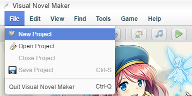
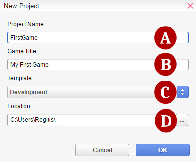
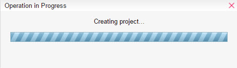
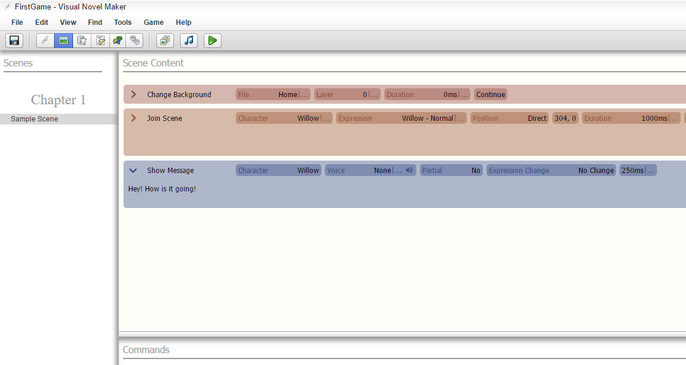
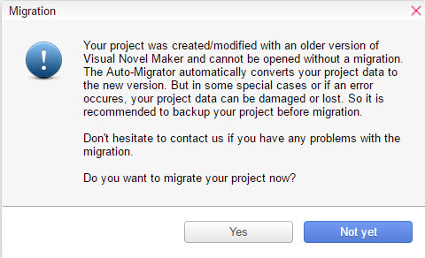

开始吧！
创建一个项目
首先我们必须创建一个项目.。项目就是用来构建游戏的数据和资源的集合。
你也可以通过资源管理器导入自己的图片和音乐。
下面是制作流程：
(1)ClickFile->New Project

(2)New Project 的窗口将会出现。

(A) Project Name- 项目文件夹的名字
(B) Game Title- 项目的标题名，也就是出现在游戏窗口中的标题。
(C) Template- 一个提供了很多选项的预制项目，以便于更简单地创建你的游戏。
(D) Location- The folder path where the project will be saved.
(3)Wait for the Operation in Progress window to finish.

(4)Your Project is now created! You are now free to start developing your game.

(2) Managing your Projects
Saving/Loading
If you want to take a break from working on your project and/or close the program, make sure that you save your project before doing so.
Click theSave button (or click File ->Save Project) to save the project you are currently working on. This overwrites any existing data for the same project.
Opening a Project
There are two different ways to open your project.
Simply select your project in the Project List from theHomeview Screenand double-click it.
Click theOpen Project button (or click File ->Open Project), select the folder of the project you want to open.
转移系统
有时候，当你在程序更新后创建新的项目，或者打开一个新项目时，一个叫做Migration的窗口就会出现。

这个提示就是在问你是否要将项目更新到最新版本版本。强烈建议你这样做，以确保可以修复bug和其他问题。 不先迁移（Migration）的话，就不能打开你的项目。
Backing Up/Deleting a Project
Project content is saved all together in the folder you specified at the time you first created it. To back it up, simply copy the entire folder to another hard disk, removable media, and so on.To delete a project you no longer need, simply click Delete Project button if it's in Project List. If the project is not listed, just delete the project folder in the usual manner.